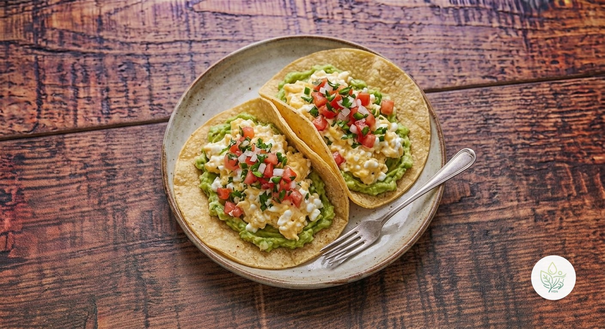

Tacos de Queso Cottage con Huevo y Aguacate
CLa tendencia del queso cottage, en versión taco: huevo revuelto cremoso con cottage, aguacate y pico de gallo sobre tortillas de maíz. Cerca de 30 g de proteína por ración y sin gluten de forma natural.
Tiene una proteína excelente (unos 30 g por ración) y casi 10 g de fibra, pero la calificamos C por dos motivos: el sodio (unos 500 mg por ración, sobre todo del queso cottage) y una grasa saturada algo alta (6,8 g) al sumar huevo, cottage y aguacate. Es un desayuno o cena rápido y saciante, no un plato para todos los días. Elegir un cottage bajo en sal y usar solo la mitad del queso baja bastante el sodio.
Ingredientes (toca el nombre para ver su ficha)
- 🌽 Tortilla de Maíz 120 g
- 🧀 Queso Cottage 200 g
- 🥚 Huevo 200 g
- 🥑 Aguacate 150 g
- 🍅 Tomate 100 g
- 🌿 Cilantro 10 g
- 🍋 Limón 20 g
Elaboración
- Bate los huevos con la mitad del queso cottage.
- Cuájalos a fuego bajo en una sartén antiadherente, removiendo suavemente 3-4 minutos, para que queden cremosos.
- Calienta las tortillas de maíz unos 30 segundos por cada lado.
- Pica el tomate y el cilantro, y aplasta el aguacate con el zumo de limón.
- Monta cada taco con el aguacate, el huevo, el queso cottage restante y el pico de gallo.
Información nutricional (receta completa, 2 raciones)
De las grasas, 13.7 g son saturadas · de los carbohidratos, 12.9 g son azúcares · sodio: 1014.5 mg
Información nutricional (por ración)
De las grasas, 6.8 g son saturadas · de los carbohidratos, 6.5 g son azúcares · sodio: 507.2 mg
Preguntas frecuentes
¿Cuántas calorías tiene la receta de Tacos de Queso Cottage con Huevo y Aguacate?
Toda la receta de Tacos de Queso Cottage con Huevo y Aguacate tiene 1033.7 kcal repartidas en 2 raciones, es decir, unas 516.9 kcal por ración.
¿Cómo puedo reducir el sodio?
Elige un queso cottage bajo en sal o sustituye la mitad por yogur natural sin azúcar; el resto de ingredientes apenas aportan sodio.
¿Es apta para celíacos?
Sí, siempre que las tortillas sean 100 % de maíz: revisa la etiqueta, porque algunas llevan harina de trigo.
¿Se puede triturar el cottage?
Sí; si lo pasas por la batidora antes de mezclarlo con el huevo, el resultado es más cremoso y sin grumos.